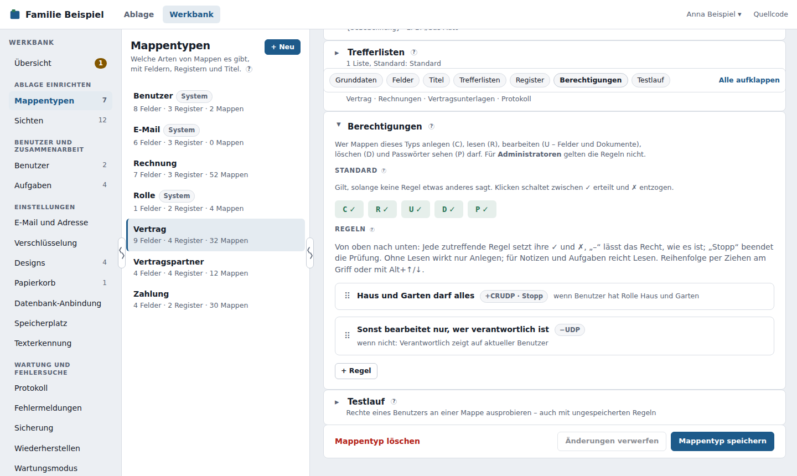
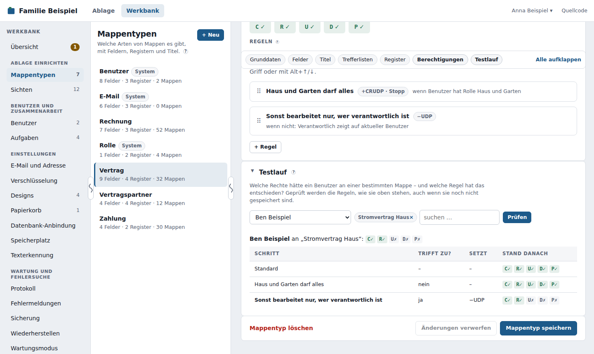

Berechtigungen¶
Mit Berechtigungen legst du je Mappentyp fest, wer welche Mappen anlegen, lesen, bearbeiten, löschen und wessen Passwörter sehen darf. Du pflegst sie am Mappentyp selbst, im Abschnitt Berechtigungen unter den Registern, und speicherst sie mit Mappentyp speichern. Direkt darunter prüfst du sie im Testlauf; was ein Benutzer insgesamt sieht, zeigt die Benutzerverwaltung.

Für Administratoren gelten die Regeln nicht
Ein Administrator sieht und darf in der Ablage immer alles. Deshalb steht dort für ihn oben ein roter Hinweis, und er bekommt keine API-Schlüssel: Für die tägliche Arbeit und für Programme legst du normale Benutzer an und gibst ihnen über Rollen und Regeln genau die Rechte, die sie brauchen.
Die fünf Rechte¶
| Kürzel | Recht | Was es erlaubt |
|---|---|---|
| C | Anlegen | neue Mappen dieses Typs anlegen |
| R | Lesen | die Mappe in Listen, Suche, Zählern und Verweisen sehen und öffnen; Notizen schreiben, Aufgaben vergeben, per E-Mail versenden |
| U | Bearbeiten | Felder ändern, Dokumente hochladen und entfernen |
| D | Löschen | die Mappe in den Papierkorb legen |
| P | Passwörter sehen | den Klartext von Passwortfeldern anzeigen (das „Auge“) |
- Ohne Lesen wirkt nichts außer Anlegen. Wer eine Mappe nicht lesen darf, darf sie auch nicht bearbeiten, löschen oder ihre Passwörter sehen – egal was die Regeln sonst sagen.
- Systemregeln gelten für alle, auch für Administratoren, und lassen sich nicht ändern: Benutzer-Mappen entstehen und verschwinden nur über die Benutzerverwaltung (kein C, kein D), E-Mail-Mappen entstehen nur beim Versenden (kein C). In der Standard-Zeile sind diese Rechte deshalb gesperrt.
- Systemfelder von Benutzern (Rolle, weitere Rollen, Aktiv) ändern sich weiterhin nur in der Benutzerverwaltung und im eigenen Profil.
- Den eigenen Papierkorb sieht jeder Benutzer immer und kann daraus wiederherstellen – auch wenn er die Mappe danach nach den Regeln nicht mehr sehen darf. Er bekommt dann einen Hinweis.
Standard¶
Über den Regeln steht die Zeile Standard mit den fünf Rechten C R U D P. Sie gilt, solange keine Regel etwas anderes sagt; ein Klick schaltet ein Recht zwischen ✓ (erteilt) und ✗ (entzogen).
- ✓ C R U D P – jeder darf alles; Regeln schränken ein. So startet jeder neue Mappentyp.
- ✗ C R U D P – niemand darf etwas; Regeln geben frei. Das passt für vertrauliche Typen wie Gehaltsabrechnungen.
- Auch gemischt, z. B. ✓ R U P, ✗ C D: Jeder darf lesen und bearbeiten, anlegen und löschen nur, wem eine Regel es erlaubt.
Früher: Haken am Mappentyp
Bis Version 0.31 gab es am Mappentyp die Haken Neue Mappen erlauben und Löschen erlauben. Beim Update wurden sie in die Berechtigungen übernommen: War ein Haken aus, steht im Standard ✗ C bzw. ✗ D, und Regeln erteilen dieses Recht nicht mehr. Niemand bekommt dadurch mehr Rechte als vorher.
Regeln¶
Eine Regel heißt: Wenn alle Bedingungen zutreffen, dann setze diese Rechte.
- Je Recht gibt es drei Stellungen: ✓ erteilen, ✗ entziehen, – unverändert lassen. Ein Klick auf den Knopf schaltet weiter.
- Die Regeln werden von oben nach unten geprüft. Jede zutreffende Regel setzt ihre ✓ und ✗ – eine spätere Regel kann also überschreiben, was eine frühere gesetzt hat.
- Stopp: Trifft die Regel zu, werden die folgenden Regeln nicht mehr geprüft. So setzt du Ausnahmen an den Anfang, z. B. „Buchhaltung darf alles“ mit Stopp.
- Jede Regel lässt sich zuklappen; eingeklappt zeigt sie Name, Rechte und Bedingungen in einer Zeile. Neue Regeln sind offen.
- Die Reihenfolge änderst du durch Ziehen am Griff ⠿ oder mit Alt+↑/↓.
- Eine Regel braucht einen Namen, mindestens eine Bedingung und muss etwas bewirken (ein Recht oder Stopp).
Bedingungen¶
| Bedingung | trifft zu, wenn … |
|---|---|
| Benutzer hat Rolle | der angemeldete Benutzer eine der gewählten Rollen hat (auch die Systemrollen Administrator und Mitglied) |
| Benutzer ist | der angemeldete Benutzer einer der gewählten Benutzer ist |
| Feld der Mappe | ein Feld der Mappe die Bedingung erfüllt – genau wie in Sichten, z. B. „Verantwortlich zeigt auf aktueller Benutzer“, „Verantwortliche Rolle zeigt auf Rollen des aktuellen Benutzers“, „Privat ist ja“ oder „Angelegt von ist aktueller Benutzer“ |
| Offene Aufgabe für den Benutzer | die Mappe eine offene Aufgabe für den angemeldeten Benutzer hat |
| Mappe ist die des Benutzers | (nur beim Typ Benutzer) die Mappe die Benutzer-Mappe des angemeldeten Benutzers ist |
Jede Bedingung lässt sich mit nicht umkehren. Mehrere Bedingungen einer Regel müssen alle zutreffen; für „oder“ legst du zwei Regeln an.
Rechte, die vom Inhalt abhängen
Ändert jemand ein Feld, von dem seine Rechte abhängen (etwa „Verantwortlich“), fragt das DMS vor dem Speichern nach, wenn er sich damit selbst das Lesen oder Bearbeiten entziehen würde.
Regel in andere Mappentypen kopieren¶
Mit In andere Mappentypen kopieren … an einer gespeicherten Regel übernimmst du sie in weitere Typen (bei ungespeicherten Änderungen erst speichern); sie landet dort am Ende. Bedingungen auf Felder, die es im Zieltyp nicht gibt, fallen weg – das DMS sagt, wie viele.
Speichern¶
Die Regeln werden mit Mappentyp speichern gespeichert, zusammen mit Feldern, Registern und Trefferlisten. Eine Regel darf deshalb auch ein Feld nutzen, das du im selben Zug neu anlegst. Passt eine Regel nicht (z. B. auf ein Feld, das du gerade entfernst), speichert das DMS nichts und nennt die Regel.
Beim Speichern prüft das DMS außerdem, ob danach Mappen dieses Typs niemand mehr lesen könnte (außer Administratoren), und fragt in diesem Fall nach. Jede Änderung steht im Protokoll mit der vollständigen Regelliste.
Testlauf¶
Unter den Regeln steht der Testlauf: Welche Rechte hätte ein bestimmter Benutzer an einer bestimmten Mappe? Wähle Benutzer und Mappe und klicke auf Prüfen. Die Tabelle zeigt Schritt für Schritt, welche Regel zutraf, was sie gesetzt hat und wie der Stand danach war.
Der Testlauf nutzt die Regeln, wie sie gerade im Editor stehen – auch ungespeicherte. So probierst du eine Änderung aus, bevor du Mappentyp speichern klickst. Ändert sich eine Regel, verschwindet das alte Ergebnis. Den Testlauf gibt es, sobald der Mappentyp einmal gespeichert ist.

Was ein Benutzer über alle Mappentypen hinweg lesen darf, zeigt Was sieht ein Benutzer? in der Benutzerverwaltung.
Berechtigungen an Sichten¶
Wer eine Sicht im Baum sieht, dort „+ Neu“ bekommt und aus ihr exportieren darf, regelst du an der Sicht selbst – mit Vererbung an die Untersichten. Das steht unter Sichten → Berechtigungen. Ob eine Mappe lesbar ist, entscheidet weiter allein der Mappentyp.
Was Benutzer davon merken¶
- Mappen ohne Leserecht fehlen in Listen, Suche, Zählern, Favoriten und Trefferlisten. Verweist eine sichtbare Mappe auf eine unsichtbare, steht dort „nicht sichtbare Mappe“ ohne Link.
- Hat jemand eine Aufgabe an einer Mappe, die er nicht lesen darf, steht sie trotzdem in seinem Eingang – ohne Titel. Er kann sie erledigen oder an jemanden weitergeben, der die Mappe sehen darf. Wer eine Aufgabe vergibt, bekommt einen Hinweis, wenn der Empfänger die Mappe nicht lesen darf.
- Ohne Bearbeiten zeigt die Mappe ihre Felder nur an; ohne Löschen fehlt „Mappe löschen“; ohne Anlegen fehlt „+ Neu“.
- Bei der Auswahl von Benutzern (Verantwortlich, Erwähnungen, Vertreter, Aufgaben-Empfänger) erscheinen nur Benutzer, deren Benutzer-Mappe man sehen darf.
- Im Profil zeigt Meine Rechte je Mappentyp, was man darf: ja, nein oder „je nach Mappe“ – die Regeln selbst bleiben verborgen.
Beispiele¶
Vertrauliche Mappen nur für Verantwortliche¶
Mappentyp Gehalt, Standard ✗ C R U D P:
- Verantwortliche – wenn Verantwortlich zeigt auf aktueller Benutzer → ✓ R U D P
Eine Rolle darf alles, alle anderen nur lesen¶
Mappentyp Rechnung, Standard ✓ C R U D P:
- Buchhaltung darf alles – wenn Benutzer hat Rolle Buchhaltung → ✓ C R U D P, Stopp
- Alle anderen nur lesen – wenn Benutzer hat nicht Rolle Buchhaltung → ✗ C U D P
Praktikanten sehen keine Passwörter¶
An jedem Typ mit Passwortfeldern (einmal anlegen, dann kopieren):
- Keine Passwörter für Praktikanten – wenn Benutzer hat Rolle Praktikant → ✗ P
Beispiel: Ein Programm, das nur Rechnungen sieht¶
Ein Programm (etwa ein ERP-System) soll über die Schnittstelle Rechnungen anlegen und ihren Bearbeiter setzen – aber nichts anderes sehen.
- Lege eine Rolle ERP und einen Benutzer ERP-Schnittstelle mit dieser Rolle an; erzeuge für ihn einen API-Schlüssel.
- Mappentyp Rechnung: Regel ERP legt Rechnungen an – wenn Benutzer hat Rolle ERP → ✓ C R U.
- Mappentyp Benutzer: Regel ERP sieht nur die Buchhaltung – wenn Benutzer hat Rolle ERP und nicht: Rollen zeigt auf Buchhaltung (das Feld der Benutzer-Mappe) → ✗ R. So kann das Programm als „Verantwortlich“ nur Mitglieder der Buchhaltung eintragen.
- Alle übrigen Mappentypen: Regel ERP sieht nichts – wenn Benutzer hat Rolle ERP → ✗ C R U D P (einmal anlegen, dann in die anderen Typen kopieren).
- Mit Was sieht ein Benutzer? am Benutzer ERP-Schnittstelle kontrollierst du das Ergebnis.